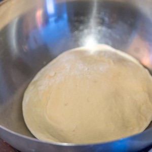
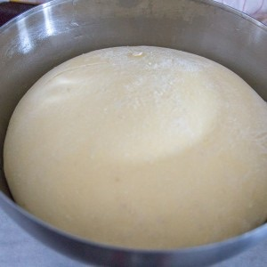
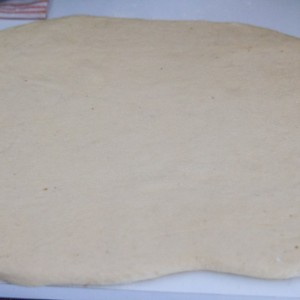
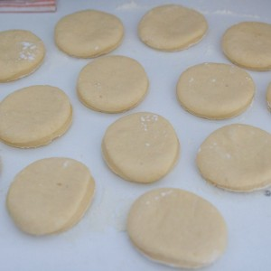
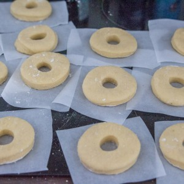
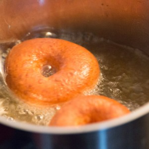
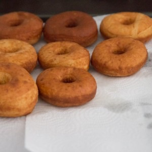

La recette des Donuts

Aujourd’hui on se retrouve avec une recette de folie puisqu’il s’agit de la recette des donuts maison et pour une première je les ai fait de toutes les couleurs!!
Que celui qui n’aime pas les donuts lève la main!!! Non mais je me doute bien que tout le monde n’en raffole pas mais tout de même il faut bien avouer que c’est vraiment trop bon (je n’en mange pas des tonnes mais juste le fait de les décorer ça m’éclate!). Je n’en avais jamais fait avant et comme très souvent quand je ne connais pas et que c’est une recette plutôt longue (car je n’ai pas envie de tout jeter à la poubelle sous prétexte que je fais des « expériences »), je m’appuie sur des auteurs qui ont des recettes qui marchent et qui ne m’ont pas déçues auparavant.
Pour cette recette de donuts j’ai donc feuilleté le livre « New-York les recettes cultes » de Marc Grossman et on y trouve en effet une très chouette recette de « doughnuts »et je m’y suis mise tête baissée. Il faut dire que ça faisait bien des mois et des mois que mon chéri me réclamait des donuts alors il était temps que je m’y mette (car lui il ne les décore pas, il les mange!!)!
Concernant la recette, je n’ai pas été déçue (je ne la publierais pas sinon) mais je pense modifier deux trois petites choses la prochaine fois (maintenant je peux faire des expériences!!!) . La recette de Marc Grossman fonctionne vraiment bien et on retrouve bien l’odeur et le goût de beignets (que j’adore!!)
Pour cette première, il s’agit de donuts classiques à la vanille recouverts d’un glaçage (type glaçage royal) également à la vanille. Je prévois d’en faire très très prochainement avec du chocolat et je viendrai certainement par ici vous donner mes impressions ainsi que la recette!
Contrairement à ceux que vous achetez dans le commerce, vous ne trouverez pas de E200 ni de E216 et encore moins de E220 dans mes donuts (juste de l’extrait de vanille) alors forcément ils ne se conserveront pas très longtemps. En effet, si vous faites cette recette je vous conseille de les manger dans la journée ou le lendemain car ils se dessèchent et durcissent assez vite. Si vous devez conserver vos donuts, pensez à les placer dans une boîte hermétique pour qu’ils ne s’altèrent pas trop jusqu’au lendemain.
Je vous laisse maintenant avec la recette et si vous avez des questions surtout n’hésitez pas!
Ingrédients
- Huile de noix de coco (à défaut du beurre doux) - 70g
- Lait - 360ml
- Farine T45 - 820g
- Levure boulangère instantanée - 10g
- Sucre - 115g
- Oeufs - 2
- Jaune d'oeuf - 1
- Extrait de vanille - 1 càc
- Sel - 1 càc
- Sucre glace - 510g
- Lait - 6 càs
- Extrait de vanille - 1/2 càc
- Colorant de votre choix
- Paillettes alimentaires, éléments de déco etc..
- Huile de friture - 1L
Instructions
- Préparation 1 : Faire fondre le beurre (ou dissoudre l'huile) dans le lait
- Préparation 2 : Dans le bol de votre robot, mélanger la farine la levure et le sucre
- Préparation 3 : Mélanger les œufs, le jaune d’œuf, l'extrait de vanille et le sel
- Verser la préparation 1 et 3 dans la préparation 2
- Pétrir jusqu'à obtenir un pâte très élastique (compter 10 minutes au robot)
- Former une boule
- Graisser un récipient avec une huile neutre et placer la boule à l'intérieur
- Couvrir d'un film alimentaire
- Laisser pousser pendant 1h30 à température ambiante
- Au bout d'1h30 placer au frais pendant 3 heures
- Au bout des 4h30 de repos reprenez votre pâte Pendant les 4h30 vous pouvez découper des formes carrées dans du papier sulfurisé car les donuts devront être, une fois formés, mis individuellement sur du papier sulfurisé
- Fariner votre plan de travail
- Étaler la pâte au rouleau sur votre plan de travail fariné
- La couper à l'aide d'emporte-pièces de la forme voulue (ici j'ai utilisé des emporte-pièces ronds et pour faire le trou au milieu je me suis servie d'une douille que j'utilise normalement pour glacer les cupcakes)
- Vous pouvez réutiliser vos chutes de pâtes pour refaire des donuts ou tout simplement pour faire des beignets
- Au fur et à mesure placer vos donuts sur du papier sulfurisé (que vous avez préalablement découpé pour que chaque donuts ait son propre morceau de papier sulfurisé)
- Saupoudrer de farine
- Couvrir d'un torchon et laisser pousser pendant encore 1h
- Au bout des 1h, faites chauffer l'huile de friture dans une grande cocotte
- Placer les donuts dans l'huile chaude (moi je les plonge deux par deux pour que ce soit plus simple) et faire frire les donuts 1 à 2 minutes de chaque côté jusqu'à ce qu'ils soient bien dorés
- Placer les donuts au fur et à mesure sur du papier absorbant pour enlever l'excédent d'huile
- Laisser refroidir totalement avant de glacer
- Mélanger le sucre glace avec le lait et l'extrait de vanille
- Vous pouvez diviser ce mélange si vous souhaitez faire plusieurs couleurs
- Ajouter le colorant de votre choix (je n'utilise que du colorant en gel de chez wilton)
- Mélanger
- Ajouter plus de lait si le glaçage est trop épais ou plus de sucre s'il est trop liquide
- Attention, le glaçage doit être suffisamment épais pour rester sur le donuts et devenir opaque
- une fois le glaçage prêt, tremper les donuts à l'intérieur un par un
- Laisser retomber le glaçage en posant vos donuts sur une grille
- Attendre que le glaçage devienne opaque avant de déguster!







Les tips de la communauté
Donuts magnifiques et appétissants avec glaçage aux couleurs pastels superbes. Recette très demandée avec nombreuses questions pratiques, largement approuvée par lecteurs ayant testé.
Astuces
- Pas besoin de friteuse, possible en cocotte ou au four
- Possible cuire au four ~6 min à 200° pour version moins grasse
- Levure boulangère instantanée (celle avec petites billes)
- Pâte 2-3cm d'épaisseur
- Glaçage pastel visuellement très attrayant
- Cuisson jour même, consommer rapidement après
Variantes suggérées
- Possible remplacer huile coco par beurre non salé
- Décoration glaçage très variée et créative possible
Ajustements signalés
- Pâte doit être faite et cuite le jour même, ne peut pas être préparée la veille
- Température du lait+beurre pas dépasser 50° pour préserver levure